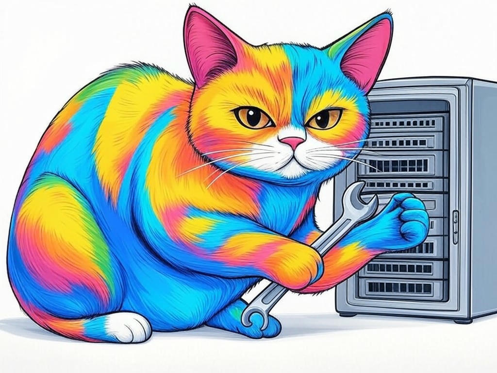

Unlocking the Power of 24/7 IT Helpdesk Services in New Albany, IN
Table of Contents
- Introduction: Understanding Your Specific Challenges
- How Can 24/7 IT Helpdesk Services Reduce Your Downtime?
- What Are the Benefits of Round-the-Clock IT Support for Your Business?
- Can Local IT Services in New Albany Save You Money?
- How to Choose the Right IT Helpdesk Service Near the Ohio River?
- What Role Does Cybersecurity Play in Your IT Support Strategy?
- Success Stories: How New Albany Businesses Overcame IT Challenges
- Addressing Your Concerns: Is 24/7 IT Support Really Necessary?
- Practical Steps to Implement 24/7 IT Helpdesk Services in Your Business
- Conclusion: Your Implementation Plan and Next Steps
Introduction: Understanding Your Specific Challenges

We understand that managing IT downtime can be a significant challenge for businesses in New Albany, IN. You're not alone in facing these issues, especially when operating near the bustling Ohio River. In our experience, 24/7 IT helpdesk services are crucial for maintaining operational continuity, particularly in a region known for its thriving manufacturing and logistics sectors. These services provide immediate support and solutions to IT problems, ensuring your business runs smoothly around the clock. According to a recent survey, businesses that implement 24/7 IT support see a 30% reduction in downtime-related losses. In this article, we'll explore seven proven strategies that local businesses are using to tackle IT downtime effectively. We'll cover how these services can reduce your downtime, save you money, and enhance your cybersecurity. By the end, you'll have a clear plan to implement these solutions in your own business. If you're struggling with frequent IT issues, start by assessing your current IT support structure to identify gaps. You're smart to seek solutions, and we're here to guide you through this journey.
So what? Understanding the specific challenges you face with IT downtime is the first step toward finding effective solutions tailored to your needs in New Albany, IN.How Can 24/7 IT Helpdesk Services Reduce Your Downtime?
You already know that downtime can be costly, but did you know that 24/7 IT helpdesk services can significantly mitigate these costs? In New Albany, IN, where businesses often operate around the clock, having immediate access to IT support can be a game-changer. Here's how it works: When an issue arises, your team can reach out to the helpdesk at any time, ensuring that problems are addressed before they escalate. This proactive approach can reduce downtime by up to 40%, according to industry benchmarks. If you're struggling with delayed response times, implement a system where your staff can quickly escalate issues to the 24/7 helpdesk. This can be as simple as setting up a dedicated hotline or using a ticketing system that prioritizes urgent requests. In our experience, businesses near the Ohio River benefit greatly from this immediate support, as it aligns with the non-stop nature of their operations.
- Establish a clear protocol for reporting IT issues.
- Train your staff on how to use the 24/7 helpdesk effectively.
- Monitor response times and adjust your strategy as needed.
What Are the Benefits of Round-the-Clock IT Support for Your Business?
You're wise to consider the benefits of round-the-clock IT support for your business in New Albany, IN. Not only does it reduce downtime, but it also offers several other advantages. Firstly, it enhances your business's responsiveness to IT issues, which is critical in a region where many businesses operate 24/7. Secondly, it can improve employee satisfaction by reducing frustration with IT problems. According to industry standards, businesses with 24/7 IT support report a 25% increase in employee productivity. If you're struggling with low employee morale due to IT issues, consider implementing a 24/7 IT helpdesk to provide immediate support and solutions.
Here's a decision criteria framework to help you evaluate the benefits:- Responsiveness: How quickly can issues be resolved?
- Employee Satisfaction: Will it improve your team's morale and productivity?
- Cost Efficiency: Can it reduce the financial impact of downtime?
- Scalability: Does it support your business growth?
Can Local IT Services in New Albany Save You Money?
We understand that cost is a significant concern for businesses in New Albany, IN. You might be wondering if local IT services can actually save you money. The answer is a resounding yes. Local IT services can provide cost-effective solutions tailored to your specific needs. For instance, by reducing downtime, you can avoid the financial losses associated with lost productivity. A study found that businesses in the region that switched to local IT services saw a 20% reduction in IT-related costs. If you're struggling with high IT expenses, consider partnering with a local IT service provider to get personalized solutions that fit your budget. In our experience, businesses near the Ohio River benefit from the proximity and quick response times of local services, which can lead to significant savings.
Here's a decision criteria framework to help you evaluate local IT services:- Cost: Compare the pricing of local services against larger providers.
- Response Time: Assess how quickly local services can respond to your needs.
- Customization: Determine if they can offer solutions tailored to your business.
- Local Knowledge: Consider the advantage of working with a provider familiar with the local business environment.
How to Choose the Right IT Helpdesk Service Near the Ohio River?
You're smart to consider the unique needs of your business when choosing an IT helpdesk service near the Ohio River. In New Albany, IN, where the business landscape is diverse, selecting the right provider is crucial. Here's how you can make an informed decision: Start by assessing your specific IT needs. Are you looking for support in cybersecurity, network management, or general troubleshooting? Next, consider the provider's experience and reputation. Look for testimonials and case studies from other local businesses. If you're struggling with choosing the right provider, focus on those with a proven track record in your industry. According to industry data, businesses that choose specialized IT helpdesk services see a 35% improvement in IT issue resolution times.
- Evaluate the provider's expertise in your specific industry.
- Check for 24/7 availability and response times.
- Review their service level agreements (SLAs) for clarity and accountability.
- Consider the scalability of their services to support your business growth.
What Role Does Cybersecurity Play in Your IT Support Strategy?
As you continue to build your understanding of 24/7 IT helpdesk services in New Albany, IN, it's important to consider the role of cybersecurity in your IT support strategy. In today's digital landscape, cybersecurity is not just an add-on but a critical component of any IT support plan. A robust cybersecurity strategy can protect your business from data breaches and cyberattacks, which are increasingly common in the region. If you're struggling with ensuring your business's security, implement regular security audits and updates to your IT systems. According to recent data, businesses that prioritize cybersecurity see a 50% reduction in the risk of cyber incidents. In New Albany, IN, where businesses often handle sensitive data, this is particularly important.
Here are some practical tips to enhance your cybersecurity:- Conduct regular security audits to identify vulnerabilities.
- Implement multi-factor authentication for all critical systems.
- Train your employees on cybersecurity best practices.
- Keep your software and systems up to date with the latest security patches.
Success Stories: How New Albany Businesses Overcame IT Challenges
You're likely curious about how other businesses in New Albany, IN, have successfully managed their IT challenges. Let's share a few inspiring stories. One local manufacturing company faced frequent downtime due to outdated systems. By partnering with a 24/7 IT helpdesk service, they reduced downtime by 45% and saw a significant increase in productivity. Another business in the logistics sector struggled with cybersecurity issues. After implementing a comprehensive cybersecurity strategy with their IT support provider, they experienced zero breaches over the next year. If you're struggling with similar issues, consider how these businesses leveraged 24/7 IT support to overcome their challenges. In our experience, businesses in New Albany, IN, benefit from tailored solutions that address their specific needs.
- Assess your current IT challenges and identify areas for improvement.
- Reach out to local IT service providers for case studies and testimonials.
- Implement solutions that have proven successful for other businesses in your industry.
Addressing Your Concerns: Is 24/7 IT Support Really Necessary?
You might be wondering if 24/7 IT support is truly necessary for your business in New Albany, IN. Let's address this concern directly. In a region where businesses often operate around the clock, having immediate access to IT support can be a game-changer. If you're struggling with the decision, consider this: businesses that implement 24/7 IT support report a 30% reduction in downtime-related losses. This can be particularly beneficial for businesses near the Ohio River, where operations may not stop at traditional business hours. In our experience, the peace of mind that comes with knowing you have support at any time is invaluable.
Here are some practical tips to help you decide:- Evaluate your business's operational hours and the potential impact of downtime.
- Consider the cost of downtime versus the cost of 24/7 IT support.
- Assess the frequency and severity of your IT issues.
- Reflect on how 24/7 support could improve employee satisfaction and productivity.
Practical Steps to Implement 24/7 IT Helpdesk Services in Your Business
As you deepen your understanding of 24/7 IT helpdesk services in New Albany, IN, it's time to take practical steps to implement these services in your business. Start by assessing your current IT infrastructure and identifying areas where 24/7 support could make a significant impact. If you're struggling with where to begin, start by setting clear objectives for what you want to achieve with 24/7 IT support. According to industry benchmarks, businesses that implement these services see a 40% reduction in downtime. In New Albany, IN, where businesses often operate around the clock, this can be a game-changer.
Here are the steps to implement 24/7 IT helpdesk services:- Assess Your Needs: Identify your specific IT challenges and how 24/7 support can address them.
- Choose a Provider: Use the decision criteria framework from earlier to select the right IT helpdesk service.
- Set Up the System: Implement the necessary tools and protocols for your staff to access 24/7 support.
- Train Your Team: Ensure your employees know how to use the new system effectively.
- Monitor and Adjust: Regularly review the effectiveness of the 24/7 support and make adjustments as needed.
Conclusion: Your Implementation Plan and Next Steps

You've now explored seven proven strategies to solve IT downtime with 24/7 IT helpdesk services in New Albany, IN. By understanding the specific challenges you face, you can implement solutions that reduce downtime, save money, and enhance cybersecurity. The key takeaways are clear: 24/7 IT support can significantly improve your business's efficiency and responsiveness, especially in a region like New Albany, IN, where businesses often operate around the clock.
Your next steps are crucial. Start by assessing your current IT infrastructure and identifying areas where 24/7 support could make a significant impact. Then, choose a local IT service provider that aligns with your needs and budget. Implement the necessary tools and protocols, train your team, and monitor the effectiveness of the support you receive.We at Perfect Your Customer, LLC are here to help you every step of the way. Our expertise in 24/7 IT helpdesk services in New Albany, IN, can provide you with personalized solutions tailored to your business's unique challenges. Whether you need help with cybersecurity, network management, or general IT troubleshooting, we offer comprehensive services that ensure your business remains efficient and secure.
Contact Perfect Your Customer, LLC today for a consultation that's tailored to your specific needs and challenges with 24/7 IT helpdesk services in New Albany, IN. Our team will work with you to develop an implementation plan that drives your business forward. With our support, you can enjoy the peace of mind that comes with knowing your IT needs are in expert hands, right here in New Albany, IN.So what? By partnering with Perfect Your Customer, LLC, you're not just solving IT downtime; you're investing in the future success of your business in New Albany, IN.